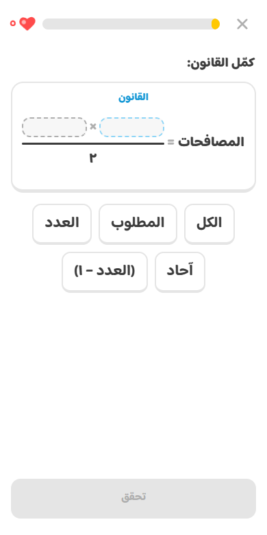
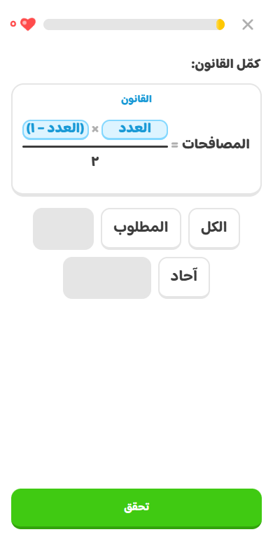
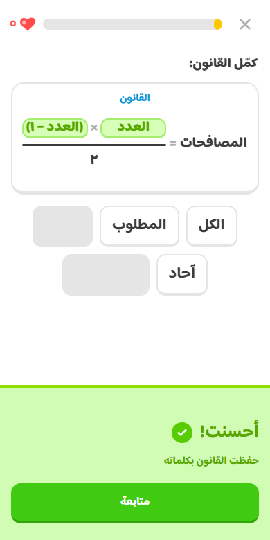
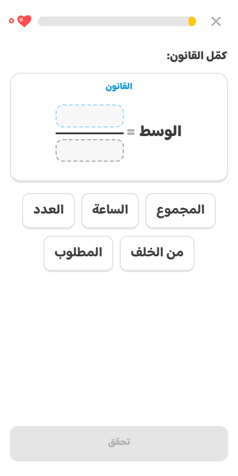
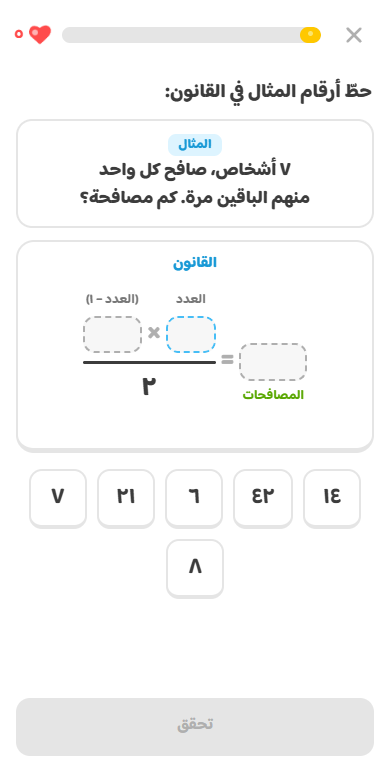
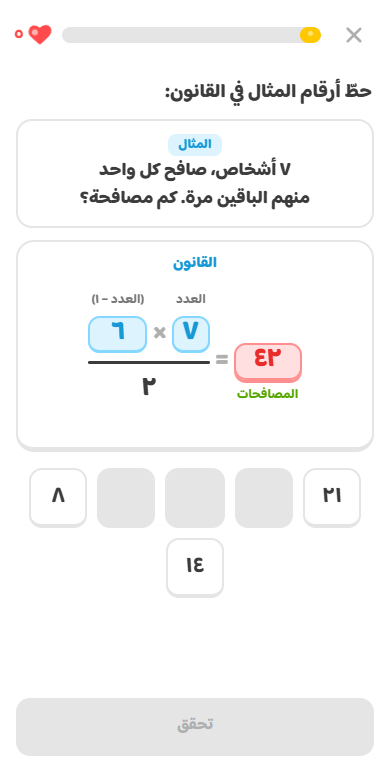
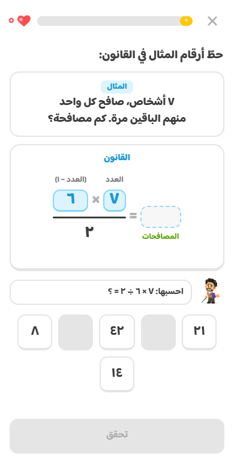
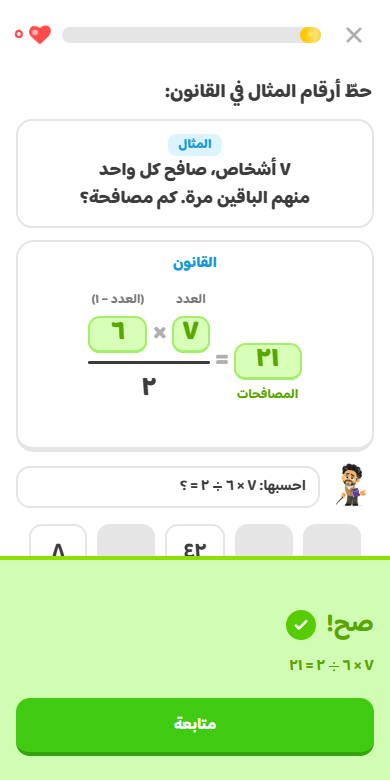

كل ملاحظة كتبتها، وتحتها الشاشة بعد التعديل. الصور ملتقطة من التطبيق نفسه. تقدر تجرّبها بيدك في صفحة القوانين في التطبيق، وفيها أزرار تفتح كل شاشة على طول.
قلت: ليش القانون ما فيه كسر مثل البطاقة؟ ولا تحط «المصافحات» كخيار، خلّها «المصافحات =» والباقي فراغ. وهنا «الوسط =».
«كمّل القانون»: نفس البطاقة، بالكسر
القانون مرسوم مثل بطاقة القانون بالضبط: البسط فوق الخط والمقام تحته.
الاسم و«=» ثابتين على اليمين، وما ينعرض اسم أي قانون كخيار أبداً.
كل فراغ عرضه ثابت من البداية، فما يتحرك شي لما تحط كلمة.

المصافحات: الاسم ثابت والباقي فراغات

بعد ما تعبّيها

صح

الوسط = فراغ فوق فراغ
قلت: حتى الكتابة هنا مو حلوة. وهالنوع من الأسئلة خلّه أحسن في الشكل وفي وش الناقص، لأن الطالب يعرف الجواب بس يغلط وهو يعبّي الفراغات.
«حطّ أرقام المثال في القانون»
المثال في بطاقة لحاله، مكتوب كبير وواضح.
تحته نفس بطاقة القانون، وتحت كل فراغ مكتوب وش هو: «العدد»، «(العدد − ١)»، و«المصافحات» بالأخضر للجواب. فاللي يعرف الجواب يعرف وين يحط كل رقم.
فراغ لكل رقم بس، بدون خطوة في النص: ٧ × ٦ ÷ ٢ = ٢١ على طول.
لو غلط: اللي صح يبقى، اللي غلط يحمرّ ويرجع، وفهيم يقول له وين الغلط بالضبط: «احسبها: ٧ × ٦ ÷ ٢ = ؟».
لو بدّل رقمين جنب «×» يُحسب صح.

المثال، وتحت كل فراغ اسمه

حط ٤٢ مكان الجواب: يحمرّ

الصح يبقى، وفهيم يساعد

صح
قلت: ليش فيه فراغين وأنا عبّيت واحد بس؟ خلّها دايماً: فراغ واحد تعبئة وحدة، فراغين تعبئتين.
المراجعة: كل فراغ يُسأل لحاله
كل كلمات القانون فاضية، وتنسأل وحدة بعد الثانية، ولكل فراغ ثلاث خيارات.